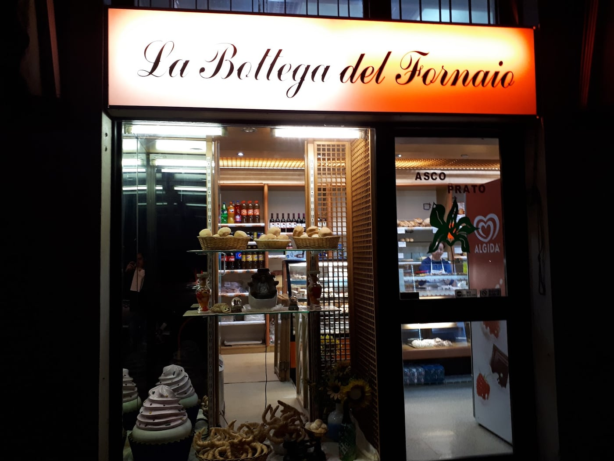
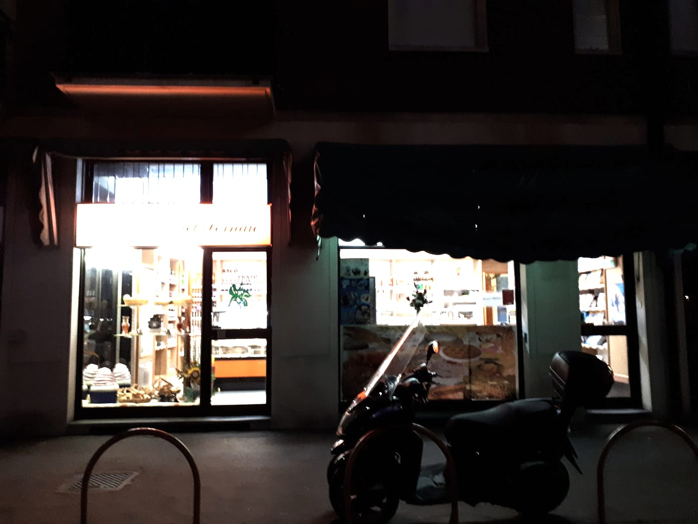
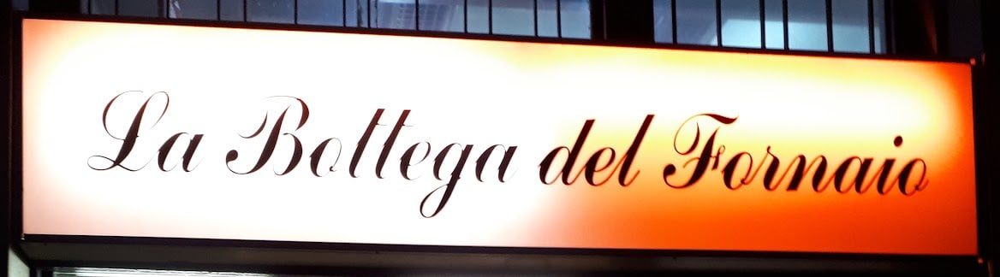

Panetteria e drogheria · viale Suzzani, angolo via Santa Monica · Milano Niguarda
Un po' di tutto.
Pane, focacce, pizze e dolci fatti da loro. E le uova, le bibite, la birra che mancano in cucina alle otto di sera. Un po' di tutto: è così che la raccontano i clienti, e la bottega è questa.
Orari in negozio
4,7 su Google, con 64 recensioni · dal lunedì al sabato, 7:30–14 e 15:30–21

un po' di tutto
Sul banco, mensola per mensola.
Otto mensole, come in vetrina. Le cose sono quelle che i clienti nominano nelle recensioni, e le foto sono le loro.
-
il pane
Pane di tutti i tipi.
Michette, filoni, pagnotte: fatto da loro, nei cestini che si vedono dalla strada. È la prima mensola, quella sotto l'insegna.
Il pane, nei cestini -
le focacce
Liscia, o con qualcosa sopra.
Con la salsa di pomodoro, con i pomodorini, con le olive, con la cipolla, con i peperoni. La lista è di una cliente che le ha contate tutte.
La focaccia con la cipolla -
bastoncini e grissini
Da sgranocchiare.
Bastoncini con le cipolle o con le olive. Grissini classici, al sesamo, alla pizzaiola.
-
pizze e torte salate
Pizza, pizzette, torte salate.
Per il pranzo di corsa e per la cena senza cucinare.
-
i dolci e le torte
Le torte, le brioche, i dolci.
La torta con la panna e le fragole l'hanno fotografata in due, a casa loro. Ci sono le brioche, i dolci del banco e le torte di compleanno con la dedica scritta sopra. «Torte buonissime, proprio come te la farebbe una mamma», ha scritto Teresa dieci mesi fa.
Panna e fragole Una brioche e un grissino -
il sabato
Il sabato, i panzerotti fritti.
Il giorno in cui la bottega frigge i panzerotti. Lo racconta chi ci viene il sabato; per il resto della settimana, chiedete al banco.
-
la drogheria
Quello che manca in cucina.
Uova, bibite, birre, e gli ingredienti che ti accorgi di non avere quando hai già cominciato a cucinare. È la parte della bottega che nelle recensioni chiamano drogheria: sugli scaffali in alto, sopra il pane.
Gli scaffali e il banco -
vegano
C'è anche vegano.
Al banco vi dicono cos'è vegano e cosa no, prodotto per prodotto. Se non c'è quello che cercate, chiedete: si informano.
chi c'è al banco
Le signore.
Nelle recensioni non hanno nome: sono la signora, le signore, le ragazze del banco, la titolare. Sono loro che vi dicono cos'è vegano e cosa è appena uscito dal forno. La parola che i clienti scrivono più spesso, dopo il pane, è gentili.
- gentili16
- pane15
- dolci13
- «tutto»11
- focacce7
Quante volte compaiono nelle 34 recensioni con testo su Google, a settembre 2026.

recensioni su Google
Cinque voci, com'erano scritte.
Panificio sotto casa, vendono un po’ di tutto quindi se ti accorgi all’ultimo che sei senza qualche ingrediente per cucinare, bibite, birre o uova puoi sempre contare su di loro… le ragazze dietro al bancone sono sempre gentilissime e disponibili, cosa che al giorno d’oggi non sempre trovi negl’esercizi commerciali…
Luca B. · 2 anni fa · 5 stelle
Posto del ❤️ Torte buonissime, proprio come te la farebbe una mamma. Tutto buono dolce e salato, prezzi fantastici
Teresa M. · 10 mesi fa · 5 stelle
Pane e focacce e pizzette tutto molto buono. Le signore che servono sono gentilissimi. Davvero la miglior panetteria di Niguarda, Bicocca, Pratocenteraro.
Antonio D. G. · un anno fa · 5 stelle
Ottimi prodotti e la signora al bancone molto cortese a spiegarli e davvero carina ( nel mio caso quelli vegani). Ottimo pane ma hanno anche: focaccia liscia, con la salsa di pomodoro, con pomodorini, olive, cipolla, peperoni; dei bastoncini squisitissimi o con cipolle o con olive; grissini o classici, sesamo o alla pizzaiola, ecc. La signora ha detto che si informerà se ci siano anche dolci vegani. 🥰 inoltre prezzi più che onesti.
Iuliana Z. · 2 anni fa · 5 stelle
La proprietaria una donna di altri tempi , personale gentilissimo , soprattutto i prodotti sono fatti da loro .. basta cibo confezionato ! Vogliamo fare bella figura a tavola ? Vogliamo mangiare sano ? Recatevi qui .. e proverete voi stessi !
Luca B. · 2 anni fa · 5 stelle
il cartello in vetrina
Dalle sette e mezza alle nove di sera.
Con la pausa dalle due alle tre e mezza. Sono gli orari del cartello sulla nostra porta, quello rosso con i quattro orologi: per le feste e per agosto, chiedete al banco.
| lunedì | 07:30–14:00 · 15:30–21:00 |
| martedì | 07:30–14:00 · 15:30–21:00 |
| mercoledì | 07:30–14:00 · 15:30–21:00 |
| giovedì | 07:30–14:00 · 15:30–21:00 |
| venerdì | 07:30–14:00 · 15:30–21:00 |
| sabato | 07:30–14:00 · 15:30–21:00 |
| domenica | chiuso |
dove
In viale Suzzani, angolo via Santa Monica.
A Niguarda, tra Ca' Granda e Pratocentenaro: due vetrine sul viale, con la tenda verde, subito dopo l'angolo di via Santa Monica.
La Bottega del Fornaio
Viale Giovanni Suzzani, angolo via Santa Monica
20162 Milano

Le domande che ci fanno.
Fate le torte con la dedica?
Sì: torte per i compleanni e le feste, con la scritta sopra. Passate al banco per accordarvi in anticipo.
Avete prodotti vegani?
Sì: al banco ve li indicano prodotto per prodotto. Se cercate qualcosa che non c'è, chiedete: ci informiamo.
Siete su Too Good To Go?
Sì. A fine giornata, quando resta qualcosa, mettiamo una Surprise Bag nell'app: pane, focacce e prodotti da forno. Il ritiro è in negozio.
Si può ordinare per telefono?
Non abbiamo un numero pubblico: per ordinare, passate al banco e ci mettiamo d'accordo.
Quali sono gli orari?
Dal lunedì al sabato dalle 7:30 alle 14 e dalle 15:30 alle 21. Domenica chiuso. Sono gli orari del cartello sulla porta: per le feste e per agosto, chiedete al banco.
Che cosa c'è oltre al pane?
Focacce, bastoncini e grissini, pizze e torte salate, brioche, dolci e torte. E la drogheria: uova, bibite, birre e qualche ingrediente per la cucina.